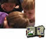
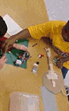

PIE Home
Events
Ideas
Crickets
Places
Links
Philosophy
 |
|
 |
Our
Learning Philosophy The PIE Network brings together the hands-on inquiry approach of science museums with the learning philosophy from the MIT Media Lab known as "Constructionism." |

The term "Constructionism" refers to two kinds of construction: constructing ideas and constructing personally-meaningful projects. Find out more about Constructionist learning theory and practice.
Hands-On
Inquiry Science
Science
museums provide opportunities for people of all ages to learn through
hands-on exploration of natural phenomena. The Exploratorium's Institute
for Inquiry offers a thoughtful collection
of inquiry science resources.

Bridging
Physical and Virtual Worlds
PIE activities bridge the divide between digital technologies and
the physical world, allowing artful exploration of the world beyond the
computer screen. Read background in the PIE
Network NSF grant proposal. Download an article
on "middle tech" (PDF) by Mike and Ann Eisenberg.
Informal
Learning
PIE
activities generally take place in informal learning environments. National
Science Foundation provides a description of informal
learning. The Institute for Learning Innovation has identified 11
key factors fundamental to Free
Choice Learning.

Our Learning Philosophy
in Action...

How are we applying these learning theories? See examples throughout this web site, including the Ideas and Crickets and Events sections. Also, the Center for Children and Technology is evaluating PIE Network activities to learn more about supporting science and technology education nationally.

Karen Thimmesch, a mentor teacher at the Museum Magnet School in St. Paul, worked with PIE staff from the Science Museum of Minnesota to involve students in developing playfully inventive projects that use technology. See how she approached thinking about these projects on this page called, "Stuff Adults Want to Know."